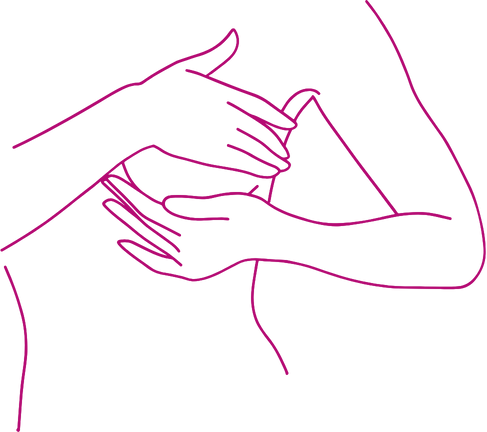
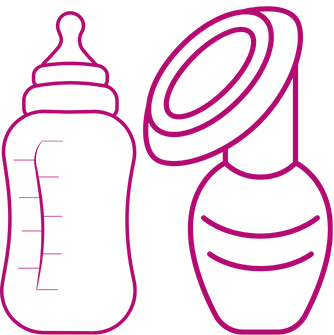

Passo 1 : Lave as mãos
Lave as mãos com água e sabão antes de começar. Seque com uma toalha limpa.

Passo 2: Higienize os seios
Utilize água morna e um pano limpo para limpar a região dos mamilos, sem uso de sabão ou produtos químicos.

Passo 3: Esterilize os utensílios
Ferva por 15 minutos o frasco de vidro com tampa de plástico e utensílios que serão utilizados para a coleta do leite.